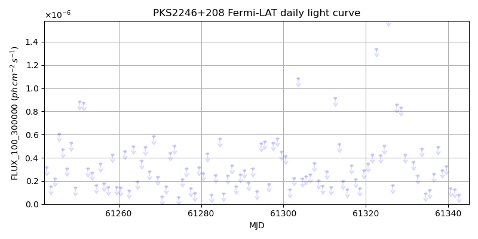
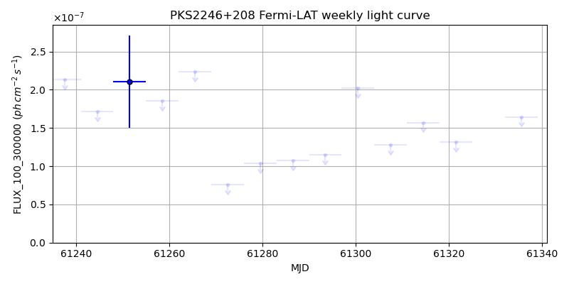
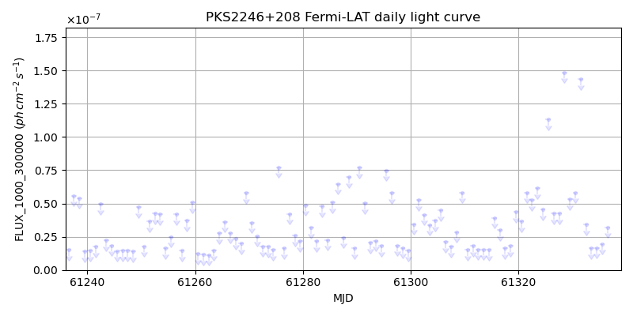
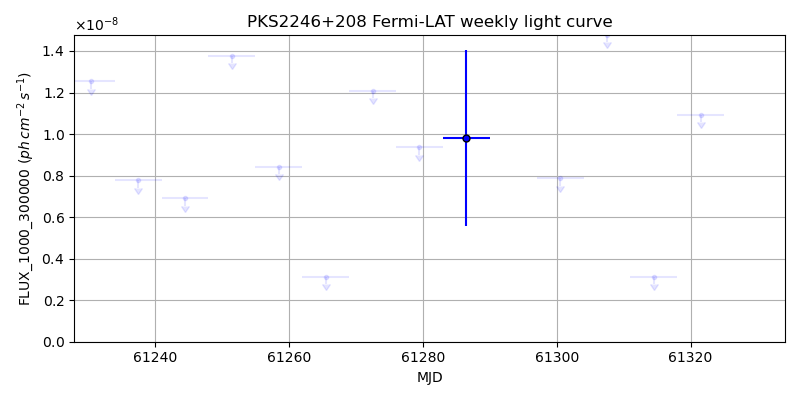

LAT Lightcurve site: https://fermi.gsfc.nasa.gov/ssc/data/access/lat/msl_lc/source/PKS_2246p208
NED: Query
Time of last update of this page: UT: 2026-10-30 15:29 (MJD: 61343.645)
| Property | Value |
|---|---|
| R.A. | 22:49:00.48 |
| Dec. | 21:07:01.2 |
| z | 1.279 |
| 3FGL SpectrumType | |
| 3FGL PL Index | -1.00 |
| 3FGL Flux_100_300000 | -1.00e+00 |
| 3FGL Flux_1000_300000 | -1.00e+00 |
| 3FGL Flux >200 GeV | -1.00e+00 |
| 3FGL Extrap. Crab >200 GeV | -1.00 |
| 3FGL Flux After EBL Absorption >200GeV | -1.00e+00 |
| 3FGL EBL Crab Fraction >200GeV | -1.00 |

| MJD | dMJD | Flux | dFlux | Frac3FGL | FracCrab>200GeV | EBLFracCrab>200GeV |
|---|---|---|---|---|---|---|
| 61338.50 | 0.50 | 2.94e-07 | 0.00e+00 | 0.00 | 0.00 | -0.00 |
| 61339.50 | 0.50 | 3.27e-07 | 0.00e+00 | 0.00 | 0.00 | -0.00 |
| 61340.50 | 0.50 | 1.36e-07 | 0.00e+00 | 0.00 | 0.00 | -0.00 |
| 61341.50 | 0.50 | 1.26e-07 | 0.00e+00 | 0.00 | 0.00 | -0.00 |
| 61342.50 | 0.50 | 8.24e-08 | 0.00e+00 | 0.00 | 0.00 | -0.00 |

| MJD | dMJD | Flux | dFlux | Frac3FGL | FracCrab>200GeV | EBLFracCrab>200GeV |
|---|---|---|---|---|---|---|
| 61307.50 | 3.50 | 1.28e-07 | 0.00e+00 | 0.00 | 0.00 | -0.00 |
| 61314.50 | 3.50 | 1.57e-07 | 0.00e+00 | 0.00 | 0.00 | -0.00 |
| 61321.50 | 3.50 | 1.32e-07 | 0.00e+00 | 0.00 | 0.00 | -0.00 |
| 61328.50 | 3.50 | 3.35e-07 | 0.00e+00 | 0.00 | 0.00 | -0.00 |
| 61335.50 | 3.50 | 1.64e-07 | 0.00e+00 | 0.00 | 0.00 | -0.00 |

| MJD | dMJD | Flux | dFlux | Frac3FGL | FracCrab>200GeV | EBLFracCrab>200GeV |
|---|---|---|---|---|---|---|
| 61338.50 | 0.50 | 1.66e-08 | 0.00e+00 | 0.00 | 0.00 | -0.00 |
| 61339.50 | 0.50 | 1.56e-08 | 0.00e+00 | 0.00 | 0.00 | -0.00 |
| 61340.50 | 0.50 | 2.45e-08 | 0.00e+00 | 0.00 | 0.00 | -0.00 |
| 61341.50 | 0.50 | 2.90e-08 | 0.00e+00 | 0.00 | 0.00 | -0.00 |
| 61342.50 | 0.50 | 1.55e-08 | 0.00e+00 | 0.00 | 0.00 | -0.00 |

| MJD | dMJD | Flux | dFlux | Frac3FGL | FracCrab>200GeV | EBLFracCrab>200GeV |
|---|---|---|---|---|---|---|
| 61307.50 | 3.50 | 1.48e-08 | 0.00e+00 | 0.00 | 0.00 | -0.00 |
| 61314.50 | 3.50 | 3.14e-09 | 0.00e+00 | 0.00 | 0.00 | -0.00 |
| 61321.50 | 3.50 | 1.09e-08 | 0.00e+00 | 0.00 | 0.00 | -0.00 |
| 61328.50 | 3.50 | 1.70e-08 | 0.00e+00 | 0.00 | 0.00 | -0.00 |
| 61335.50 | 3.50 | 3.35e-09 | 0.00e+00 | 0.00 | 0.00 | -0.00 |
--------------------------------------------------------- Using user-supplied coords: 22:49:00.48 21:07:01.2 2000 --------------------------------------------------------- FLWO UT night of: 2026-10-31 Local Sid. @ Midnight: 02:14 Sunset (-15.0) (local, UT): 18:44 01:44 Sunrise (-15.0) (local, UT): 05:31 12:31 Moonrise (local, UT): 21:49 04:49 Moonset (local, UT): Moon phase: 0.68 --------------------------------------------------------- AzTime LSID UT Obj_el Obj_az Mn_el Mn_az Sep. --------------------------------------------------------- 18:44 20:57 01:44 62.8 105.6 -27.0 28.6 108.2 19:14 21:27 02:14 68.9 114.5 -23.9 34.8 108.6 19:44 21:57 02:44 74.3 128.5 -20.2 40.4 108.9 20:14 22:27 03:14 78.5 153.1 -16.1 45.6 109.2 20:44 22:58 03:44 79.4 189.9 -11.6 50.4 109.5 21:14 23:28 04:14 76.6 221.3 -6.7 54.8 109.8 21:44 23:58 04:44 71.6 239.6 -0.9 58.8 110.1 22:14 00:28 05:14 65.8 250.5 3.8 62.5 110.3 22:44 00:58 05:44 59.7 257.9 9.2 66.0 110.6 23:14 01:28 06:14 53.3 263.4 14.8 69.3 110.8 23:44 01:58 06:44 47.0 267.9 20.6 72.5 111.1 00:14 02:28 07:14 40.6 271.9 26.5 75.5 111.3 00:44 02:58 07:44 34.2 275.5 32.5 78.6 111.5 01:14 03:28 08:14 27.8 279.0 38.5 81.7 111.7 01:44 03:58 08:44 21.6 282.4 44.7 84.9 111.9 02:14 04:28 09:14 15.4 285.8 50.8 88.3 112.1 02:44 04:59 09:44 9.3 289.4 57.0 92.2 112.3 03:14 05:29 10:14 3.5 293.1 63.2 97.0 112.5 03:44 05:59 10:44 -1.5 297.0 69.3 103.5 112.6 04:14 06:29 11:14 -8.1 301.2 75.2 113.7 112.8 04:44 06:59 11:44 -13.5 305.9 80.4 133.8 113.0 05:14 07:29 12:14 -18.5 311.0 83.0 177.6 113.2 05:31 07:46 12:31 -21.2 314.1 82.2 206.9 113.3 --------------------------------------------------------- Dark hours >55 deg.: 3.08 srcstart (UT): 2026-10-31 01:44 srcend (UT): 2026-10-31 04:48